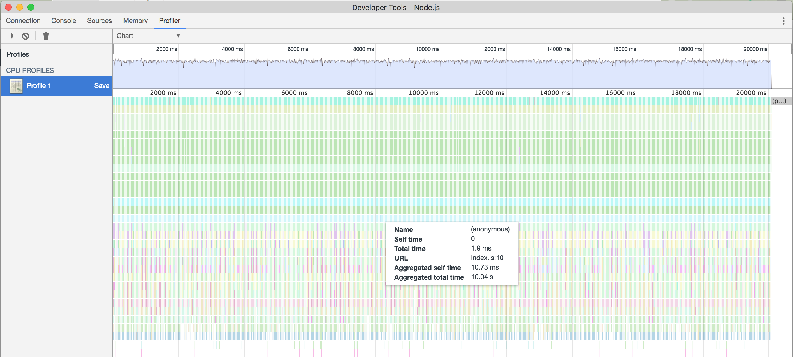

0x a Node.js Optimization Tool
I will show a tool called 0x that generates a Flame Graph. My goal is to give an overview of the tool. You can access a full step by step tutorial and learn how to use it by accessing the full article in TUNING NODE.JS APP PERFORMANCE WITH AUTOCANNON AND 0X by Ron Litzenberger. This tool was presented at the Node Interactive North America 2017 Node.js Conference that took place in Vancouver on October 5 by Matteo Collina and David Mark Clements from nearForm.
V8 is Google’s open source high-performance JavaScript engine used in Google Chrome. The 0x provides a way to visually identify bottlenecks in the V8 engine making it easy to optimise Node.js Applications.
About the sample application
The application used to demonstrate the performance tools uses node V6 and creates a server that receives requests and processes some calculations in the background. To simulate load to resources, we will use autocannon when we run the npm test command.
Requesites to run 0x
autocannon (An HTTP/1.1 benchmarking tool written in Node.js)
Node.js V6
Running an example
Get the sample application from the nearForm git repository.
git clone https://github.com/nearform/slow-rest-api
Install the Example
# install dependencies
npm install
# install autocannon
npm install -g autocannon
# install 0x
npm install -g 0x
Chrome Performance Tools
Chrome offers some built-in options for performance analysis of a page as it is running. You can run your node code in profiling mode and load the resulting v8.log into Chrome at chrome://tracing.
Run your node application:
node --prof --track_gc_object_stats --trace_gc_verbose --log_timer_events index.js
Load the generated log file into the Chrome tracing tool. The result will be a graph that shows the resulting graph with event logging of the application.
Using the Chrome Inspector
Chrome offers a profiler that you can use to attach to node process and map CPU and Memory usage while your application is running.
First, run node with the inspect flag, this will allow the Chrome debugger to attach to the node process running in at localhost port:9229
node --inspect index.js
After starting the node process, open the Chrome inspector in the Devices tab.
chrome://inspect/
The target index.js should appear under the list of Remote Targets. You can use both the CPU Profiler that will record execution and map each call to its location in the code or use the Memory Profiler to show memory allocations for your JavaScript functions.
Processor:

Memory:
Generating the flame graph in 0x
Run the server in a terminal window
0x -o index.js # The [-o] parameter opens the flame graph in the browserIn another terminal window run the test script
npm testWhen the test finishes press Ctrl-C in the first terminal window to interrupt 0x and generate the graph (flamegraph.html).
Sample Generated Flame Graph:
Reading the Flame Graph
Each box in the graph signify a function, and the different colours represent the amount of time that the function spent using the CPU. A dark red box is a hot function which would be blocking the event loop, meaning that more time was observed on top of the stack.
By hovering the mouse over the graph bars, you can see detailed information about the module: the file location and line, how long it remained in the stack and how long it stayed on the top of the stack.
By clicking on the graph line, we can zoom in and see the details for that particular line. In the example, the file “etag.js” was most of the time on the top of the stack. Observing the colours and the percentage helps isolate the performance problem to this particular file tracing back the precise line.
In this article, we gave an overview of different tools that can be used to identify bottlenecks. My favourite one being the 0x to visualise the stack trace to identify potential bottlenecks in the event loop. However, it is important to notice that once the problem is solved, it will move to another point. Improving performance is a task that will never end. One must know the balance between the time spent finding the bottleneck and when to move on to other things.
References
Near Form Repo Date Accessed: 2017-10-14
Slow Rest API Demo Date Accessed: 2017-10-14
nearForm Date Accessed: 2017-10-14
Chrome V8 Date Accessed: 2017-10-17
TUNING NODE.JS APP PERFORMANCE WITH AUTOCANNON AND 0X Date Accessed: 2017-10-17
Analyze Runtime Performance in Chrome Date Accessed: 2017-10-18
Performance Analysis Reference Date Accessed: 2017-10-18
Debugging Node.js with Chrome DevTools Date Accessed: 2017-10-18
Tools and resources regarding Node.js and Performance Tools Integration Date Accessed: 2017-10-18
Ox Repo Date Accessed: 2017-10-18